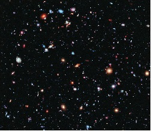

The Universe

Part 1 - Phantom Matter:
The universe began atleast 33 years ago with what would eventually go on to become a hit tv-show
and unlike said show's imdb rating, has been growing ever since(however some accounts say the universe truly began
when Edward Universe said "I am"). The Temperature around this time is thought to have been in the area of 180 THHP
(Tera-Hot-Pocket-Potential), as such solid matter did not really exist at this time (ca 1987) as it phased in out of exitence
earning it the moniker of Phantom Matter. This period of the universes life lasted until solid matter became permanent and
as such is often refered to as the Solid State Duration (S.S.D).
Part 2 - Galactic Tendency:
After the S.S.D and the fundamental forces (The, By, and Excessive) had emerged matter began to clump together in
Formations of Intricate Design of Gaseous Elements Trademark (Fidget) spirals. Not all of these spirals were created
equal however: some developed much faster than others. The following is a transcript taken from alien signals received
from deepspace:
--------------------------------------------------------------------------------------------------------
Turmoil has engulfed the Galactic Republic. The taxation of trade routes to
outlaying star systems is in dispute.
Hoping to resolve the matter with a blockade of deadly battleships, the
greedy Trade Federation has stopped all shipping to the small planet of
Naboo.
While the congress of the Republic endlessly debates this alarming chain of
events, the Supreme Chancellor has secretly dispatched two Jedi Knights,
the guardians of peace and justice in the galaxy, to settle the
conflict.....
PAN DOWN to reveal a small space cruiser heading TOWARD CAMERA at great
speed. PAN with the cruiser as it heads towardthe beautiful green planet of
Naboo, which is surrounded by hundreds of Trade Federation battleships.
INT. REPUBLIC CRUISER - COCKPIT
In the cockpit of the cruise, the CAPTAIN and PILOT maneuver closer to one
of the battleships.
QUI-GON : (off screen voice) Captain.
The Captain turns to an unseen figure sitting behind her.
CAPTAIN : Yes, sir?
QUI-GON : (V.O) Tell them we wish to board at once.
CAPTAIN : Yes, sir.
The CAPTAIN looks to her view screen, where NUTE GUNRAY, a Neimoidian trade
viceroy, waits for a reply.
CAPTAIN : (cont'd) With all due respect for the Trade Federation, the
Ambassodors for the Supreme Chancellor wish to board immediately.
NUTE : Yes, yes, of coarse...ahhh...as you know, our blockade is perfectly
legal, and we'd be happy to recieve the Ambassador...Happy to.
The screen goes black. Out the cockpit window, the sinister battleship
looms ever closer.
EXT. FEDERATION BATTLESHIP - DOCKING BAY - SPACE (FX)
------------------------------------------------------------------------------------------------------------------
That is all we have received.
Part 3 - Stardust Creation:
After the G.T era all galxies in the universe fell into 1 of 2 categories represented by this table:
| Does it contain(what will be) Earth? | Category |
|---|---|
| yes | Earth's Galaxy |
| no | Not Earth's Galaxy |
| ? | Off by one error |
As these were now fully formed themselves, smaller structures begain to from within them: Nebulae. From Nebulae came stars as they are just a large concentration of a nebula's gaseous elements, and from stars came solar systems which pulled rocks to collide with each other and form larger rocks known as planets. One of these planets would one day be called Earth and it would sit in the Sol solar system of the Orion arm of the MilkyWay galaxy. However don't let this distract you from the fact that in 1998, The Undertaker threw Mankind off Hell In A Cell, and plummeted 16 ft through an announcer's table.